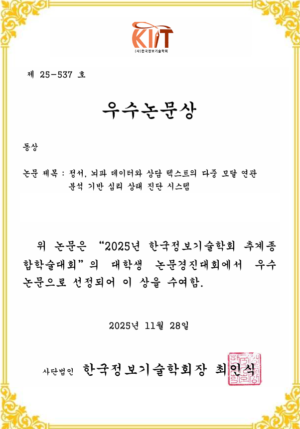
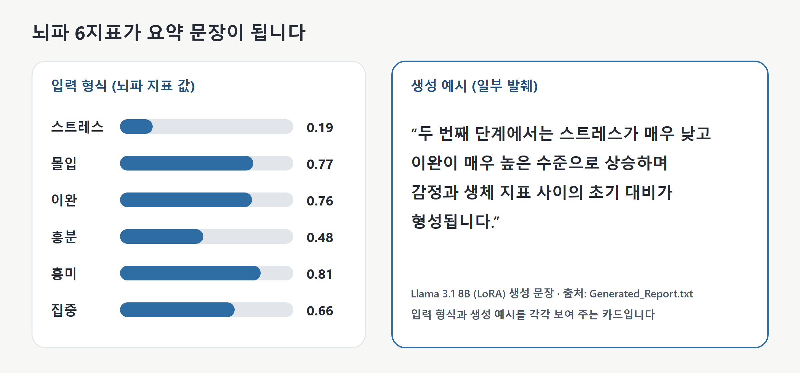

포트폴리오 / 프로젝트
Emori
뇌파·상담 텍스트 멀티모달 AI, 뇌파 요약 LLM 담당
개요
VR 체험 중 뇌파와 상담 인터뷰 텍스트를 함께 분석해 상담자가 학생 상태를 빠르게 파악하도록 돕는 산학협력 프로젝트입니다(협력기관 (주)모티버). 저는 뇌파 지표를 서술형 리포트로 바꾸는 부분을 맡아, 실제 기록 45세트에 규칙 증강 25세트를 더한 70세트에 4가지 말투의 정답 문장을 작성하고, Llama 3.1 8B를 LoRA(적은 수의 가중치만 학습하는 경량 추가학습)로 파인튜닝했습니다.

제가 맡은 일
- 뇌파·VR 결과 텍스트 파일을 하나의 JSON으로 통합, 값과 이름 정리
- 규칙 기반 데이터 증강(50세트 생성, 정답 문장이 있는 25세트를 학습에 사용)
- 정답 문장 4가지 말투 작성 (70세트 x 4말투 = 280개)
- Llama 3.1 8B 경량 추가학습과 서술형 요약 생성
팀원 담당·팀 공통
상담 인터뷰 텍스트의 감정 키워드 추출(단어 분석과 문맥 이해 언어모델 결합), 키워드와 감정의 연관 분석, 통합 화면은 팀원이 맡았습니다. 제 성과로 주장하지 않습니다.
결과 예시

구조
입력
전처리
학습
출력
사례
CASE 01Emori팀
규칙·범용 LLM 대신 추가학습 선택
체험 시작·중간·마지막 3단계를 각각 한 문장으로 서술하는 모델을 만들었습니다.
P 문제
뇌파 지표는 숫자라 상담자가 바로 읽기 어렵습니다. 협력 기업과 정해진 형식의 서술형 문장으로 풀어 주기로 합의했습니다.
| 규칙으로 만든 문장 | 범용 LLM | 경량 추가학습 선택 | |
|---|---|---|---|
| 표현 | 반복되고 지표를 하나씩만 해석 | 뇌파 분야 표현이 부족하고 일반론에 그침 | 정해진 형식과 표현을 학습 |
| 데이터 | 필요 없음 | 필요 없음 | 100개 이하라 규칙 증강과 여러 말투의 정답으로 보완 |
| 판단 | 제외 | 제외 | 선택 |
A 실행
- 4비트 양자화와 LoRA(대상 q_proj·v_proj)로 개인 GPU(RTX 4070 Ti)에서 학습
- 학습 바퀴 수를 10에서 7로 줄임(커밋 기록, 비교 수치는 없음)
R 결과
체험 시작·중간·마지막 3단계를 각각 한 문장으로 서술하는 모델을 만들었습니다.
CASE 02Emori팀
규칙 증강으로 학습 세트 확장
증강 50세트 중 정답 문장이 있는 25세트가 학습 입력 70세트의 일부가 됐고, 모두 실제 기록 1개에서 파생됩니다.
P 문제
학생 기록이 적어 그대로는 학습이 어려워, 규칙에 따라 가상 기록을 만들어 늘렸습니다.
- 50세트규칙으로 생성한 증강 세트
- 25세트정답 문장이 있어 학습에 쓴 증강 세트
- 45세트학습에 쓴 실제 기록 세트(70세트 중 약 64%)
- 1개증강의 원본이 된 실제 기록
A 분석
- 무작위 생성은 스트레스·이완이 함께 오르는 비현실 조합이 나와 제외
A 실행
- 처음 9세트는 원본 값의 ±20%, 나머지는 이완 기준값을 0.1~0.9에서 뽑고 스트레스를 그 반대로 맞춤(집중·흥미·관여는 공통 기준값에 ±20%)
- 감정 색·채움 정도는 정해진 단어표에서 선택, 무작위 값 고정, 값 이름 표기를 원본 기준으로 통일
R 결과
증강 50세트 중 정답 문장이 있는 25세트가 학습 입력 70세트의 일부가 됐고, 모두 실제 기록 1개에서 파생됩니다.
CASE 03Emori팀
4가지 말투의 정답 문장 작성
학습용 168개, 검증용 42개를 만들었습니다(검증 방식의 한계는 한계 항목 참고).
P 문제
정답 문장이 한 가지 말투뿐이면 리포트가 단조롭고 학습 데이터도 적었습니다. 같은 입력에 여러 관점의 정답이 필요했습니다.
A 분석
- 같은 입력에 여러 관점의 정답을 달면 표현이 다양해지고 데이터도 늘어남
- 4번째 말투(단순 나열)는 읽어 보니 지나치게 형식적이라 제외(정량 비교 아님)
A 실행
- 말투 기준 4개(상반된 지표 설명, 긍정 결과 강조, 흐름·전문 어휘, 단순 나열)로 70세트에 작성
- 단순 나열을 빼 280개에서 210개, 학습 80 : 검증 20으로 분할
R 결과
학습용 168개, 검증용 42개를 만들었습니다(검증 방식의 한계는 한계 항목 참고).
70세트 x 4말투 작성 후, 단순 나열 제외, 8:2 분할
CASE 04Emori팀
생성 문장 변화의 커밋 기록
생성 문장이 단일 문단에서 3단계 서술, 정해진 틀의 문장으로 바뀐 과정이 커밋으로 남아 있습니다.
P 문제
정량 평가 대신, 데이터와 학습 설정을 바꿀 때마다 같은 입력의 생성 문장이 어떻게 달라졌는지 기록해 확인했습니다.
- 첫 결과: 주요 감정·감정 강도·이완 정도를 한 문단으로 요약
- 경험한 감정과 이완·집중을 서술하지만 단계 구분이 없음
- 검증 분할과 학습 7바퀴 적용, 라벨 갱신 뒤 시작·중간·마지막 3단계 흐름으로 서술
- 단순 나열 말투 제외, 문장 시작 표현을 고정해 단계마다 한 문장으로 정리
R 결과
생성 문장이 단일 문단에서 3단계 서술, 정해진 틀의 문장으로 바뀐 과정이 커밋으로 남아 있습니다. 같은 입력 하나로 비교한 기록입니다.
한계
- 해석 주의검증 손실은 독립 검증이 아님레코드 단위 무작위 분할이라 같은 입력의 3말투 정답이 학습·검증에 나뉩니다(고유 입력 70개).
- 해석 주의시연 입력이 학습 입력결과 카드의 입력이 학습 입력과 같은 문자열이라, 처음 보는 입력에 대한 생성이 아닙니다.
- 미검증정량 평가와 증강 분포정량 평가 없이 생성 문장을 직접 읽어 확인했고, 증강은 기록 1개에서만 파생돼 실제 분포와의 유사도는 미검증입니다.
- 미검증문장 다양성과 감정 단어 값문장 시작 표현을 고정해 다양성이 제한적이고, 일부 감정 단어에 대응시킨 값이 협력 기업 기준과 맞는지 확인이 필요합니다.
구현과 실행 방법은 저장소 README에 있습니다.